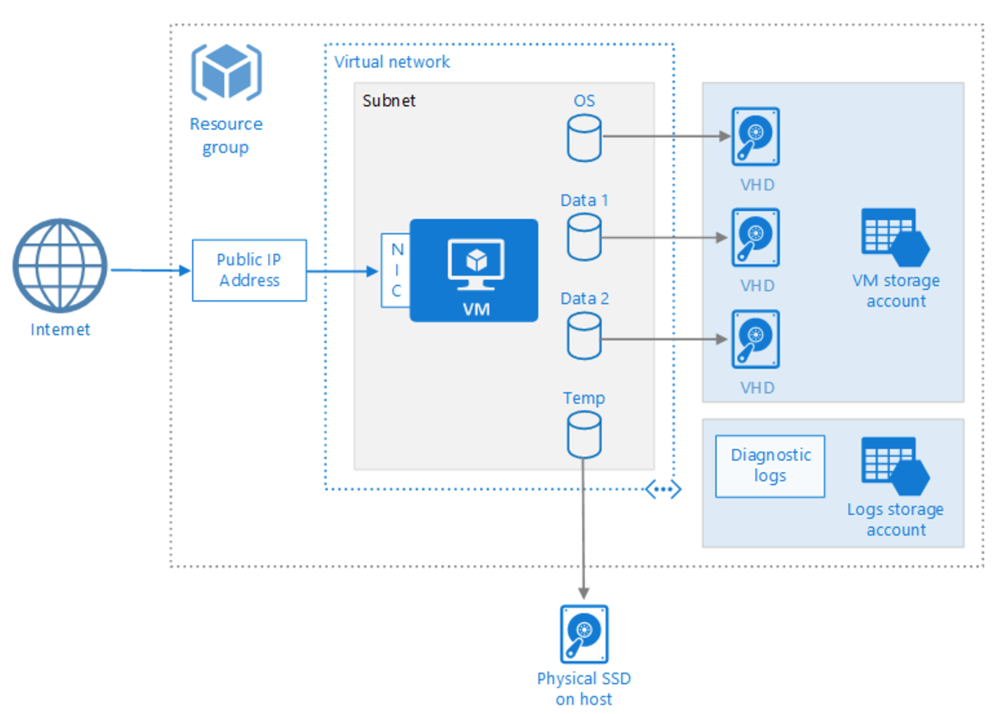
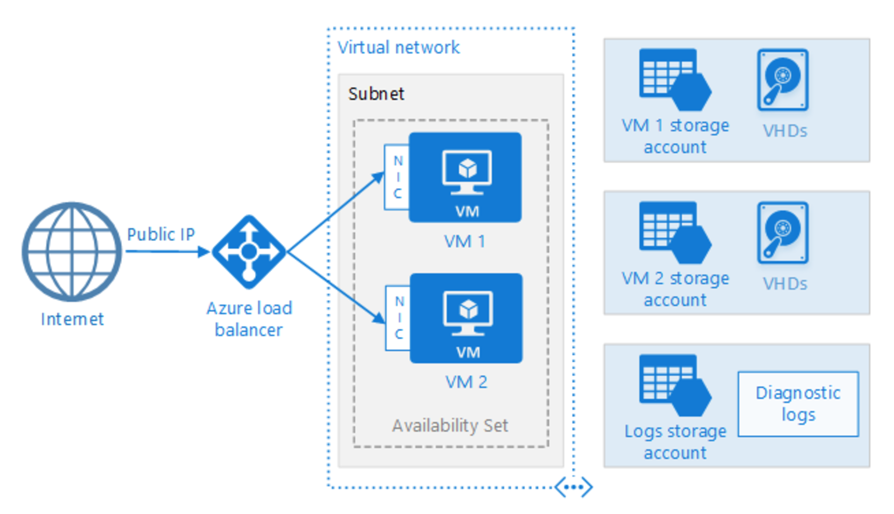
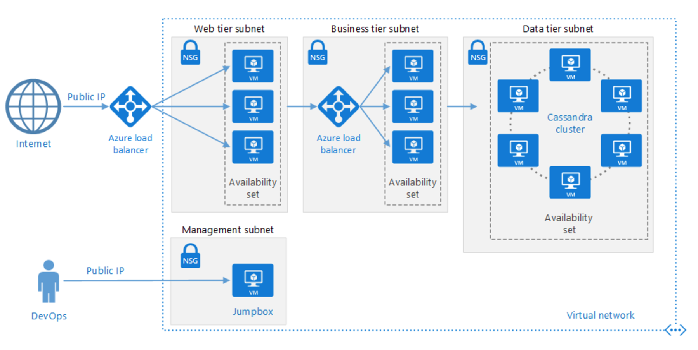
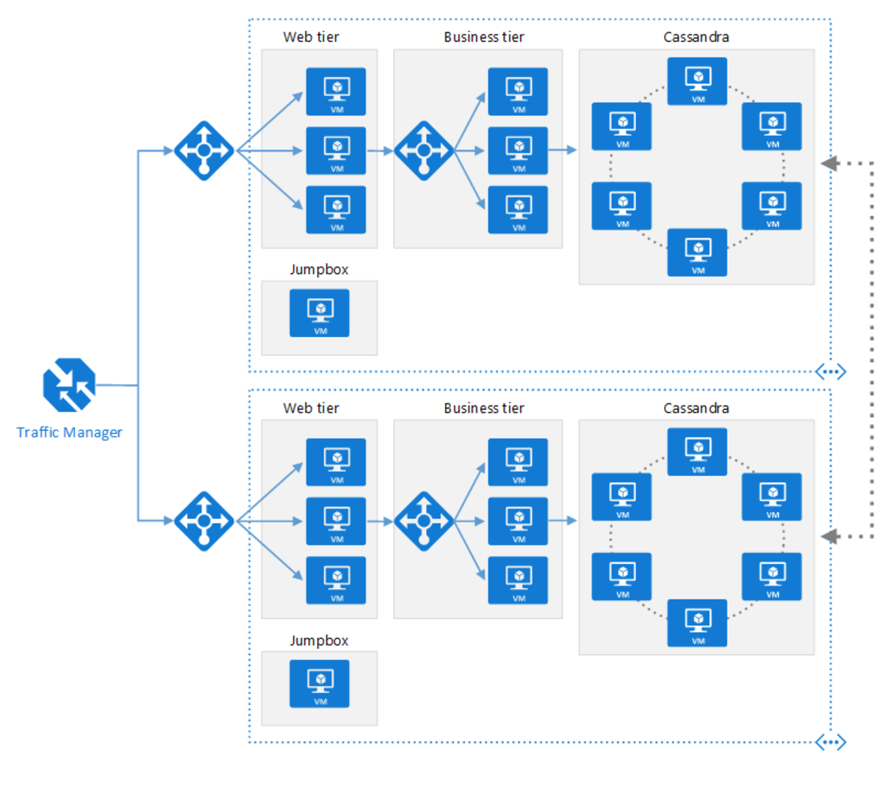

Azure中Linux主机推荐的布署模型
Table of Contents
介绍微软推荐的linux vm的几种布署方式。这些都是在arm模式下的布署方式， 在asm模式中，只是一些概念不同，原理都是相同的。
1 单个VM

public ip 是一种资源，从外网中访问该资源组都只能通过它。如果资源组
中只有一台机器的时候，访问 public ip 就能直接访问到内部的虚拟机
（public ip是attach到虚拟机的）。
Virtual network 是一种资源。虚拟网络可以划分子网 Subnet ，该示例
中只划分了一个子网。创建虚拟网络的时候可以选择地址段，可以随便找一个
私有的地址段分配（10.0.0.0/8这样）。
网卡 nic 也是资源（Network interface card）。网卡在新建的时候需要
指定ip地址。可以是dhcp，也可以是静态分配，它需要在一个子网内，本例中
的nic就是在subnet这个子网中的。网卡可以attach到虚拟机上。这样虚拟机
才存在于网络中。
综上所述，本例中我们可以使用 public ip 来ssh到vm，但是使用
ifconfig 查出来vm的ip却是一个内网地址（一般是一个10网络的地址，就
是subnet中的一个地址。）。
VM storage account 是用于存储的。拉起的虚拟机的磁盘都可以存储在里
面，存在它里面的数据都是持久化的，不会丢失。我认为这个存储账户中的数
据微软应该是自己做了冗余、灾备的。
temp ，这个是给虚拟机分配的临时存储空间 Temporary disk ，它们一
般就直接存在拉起虚拟机的物理机上。存在其上的数据是没有持久化的。虚拟
机重启或删除，数据就删除了。
Diagnostic logs 是用于存储一些虚拟机的诊断日志的。
2 Load balanced的多个虚拟机

这种情况，由于拉起了多个虚拟机，前面一般需要架设一个 load balance
来分配流量。
load balance 可以配置，它的前端（front end）可以配置成 public ip
，把 VM1 和 VM2 加入它的后端池。这样流量来以后，load balance会自
动分配流量。
这种情况下，如果想用ssh登陆内部的虚拟机，只有一个public ip地址，不设 置的话，只能是随机登陆一个。可以通过设置端口映射的方式来固定登陆某台 机器。
同一个虚拟网络中的多台机器是互通的。也可以随机登陆到一台机器后，用内 网地址来访问其它机器。
这里多了一个 Availiability Set （可用性集）的概念。一个可用性集中
至少应该有两台机器。它是微软给用户的一个保证：不管什么时候，保证同一
个可用性集中的机器至少有一个可用。原理大概就是把加入同一个可用性集的
多个机器尽量地分到不同的机房、地域。这样万一机房停电了或者出问题，其
它机器还是可用的。而且有时候微软执行系统维护需要机器重启的时候，也不
会重启一个可用性集中的所有机器。
因为每个存储账户的 IOPS（input/output operations per second） 有限
制。推荐为每一个vm建一个独立的存储账号。这样可以避免 IOPS 成为性能
瓶颈。
3 N层网络的应用

该示例和 load_balance 示例相比，把虚拟网络分为了四个子网：web tier
提供web服务、Business tier提供XX服务、Data tier提供数据存储服务，另
外，管理员可以登陆到Management网络，使用内网地址来对整个应用进行管理。
NSG（network security group） 网络安全组的作用就相当于防火墙。它可
以应用于单个虚拟机。也可以应用于一个子网。该例中每个子网都有一个NSG。
可以根据每个子网不同的功能来定制每个NSG。比如Data tier subnet层的NSG
可以限制本subnet只接受Business tier subnet和Management subnet这两个
网络中的流量。而Management subnet的NSG可以限制只接受一些可信的公网地
址的访问。
两个load balance，左边一个（外部load balance）功能和 load_balance
示例中的相同。右边一个是internal load balance，它只会处理直接到达云
服务内部资源的流量。
该示例中有两个public ip，一个是在外部load balance上，一个是在Jumpbox 这台虚拟机上。
4 多区域的服务

这样的模型一般是为灾备、跨区域性能考虑。
前面的 Traffic Manager 在一种资源。它可以根据性能、优先级等流量导
到后面两个region中的其中一个或两个。
如果是灾备，可以设置其中一个region为主，一个为备。正常情况下，
Traffic Manager 把流量导入到主。如果主出问题，它可以自动把流量切
换到备上。
Traffic Manager 本身是没有 public ip 的，它只有一个域名
XX.trafficmanager.cn 。假设两个 region 的 public ip 分别为ip1
和ip2。其中ip1为主，ip2为备。设置 Traffic Manager 时，把ip1的优先
级设置较高。访问 Traffic Manager 的域名 XX.trafficmanager.cn 时，
会解析到ip1的地址。如果主出问题了，再访问域名，则解析到ip2。
另外，两个region中的数据应该保证一致性。微软推荐的是使用开源分布式
NoSQL数据库系统 Apache Cassandra 。这要求两个region中的数据层的机
器应该是相通的。 这里 推荐了几种方法：public ip、VPN和专用线路。